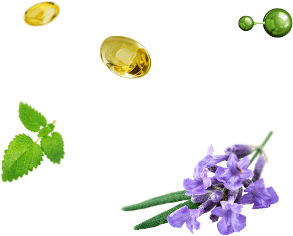
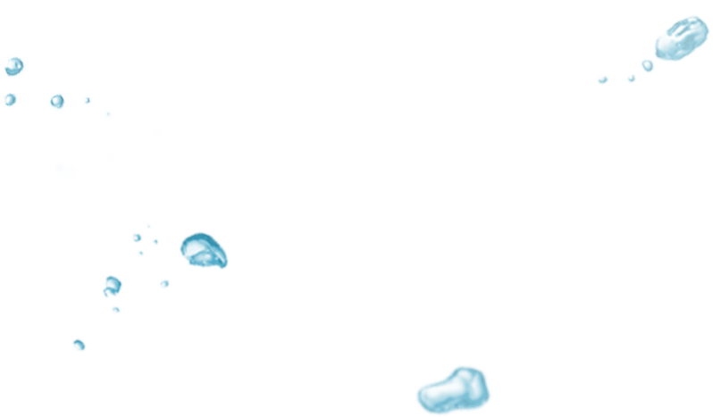

NikoStop Antistress
Krople do łatwego rzucenia palenia
- Zupełne uwolnienie się od nałogu palenia za 1 kurs
- Bez stresu, złości oraz irytacji
- Nawet dla najbardziej zatwardziałych palaczy
NO-SMOKING
Zacznij swobodnie żyć już teraz!
Dlaczego NikoStop jest lepszym od innych środków?
Porównanie skuteczności środków przeciw paleniu
Konwencjonalne środki przeciw paleniu i zamienniki nikotyny NIE pomagają człowiekowi radzić sobie ze stresem i dyskomfortem, które występują po rzuceniu palenia tytoniu.
W odróżnieniu od zwykłych środków, które NIE pomagają w zaprzestaniu palenia, NikoStop Antistress rozwiązuje problem dyskomfortu w ciągu 1 kursu.
Zamów


- 
- 
Co sprawia, że NikoStop jest taki skuteczny?
-
Witaminy B1, B3, B6Zapewniają optymalną aktywność układu nerwowego, łagodzą objawy odstawienia palenia, poprawiają pracę mózgu, polepszają zdrowie organizmu.
-
GłógZapobiega starzeniu się naczyń krwionośnych, poprawia krążenie krwi, normalizuje robotę serca i mózgu, posiada działanie uspokajające na układ nerwowy, leczy cały organizm.
-
TryptofanNiezbędny aminokwas, chemiczny sekret radości. Zapewnia dobry nastrój, spokój, zdrowy i mocny sen.
-
MelisaDoskonale pomaga na stres, nerwowość oraz depresję, które są spowodowane przez brak nikotyny, poprawia pamięć i uwagę.
-
LawendaPotężny adaptogen, który sprawia, że jest łatwo się przyzwyczaić do życia bez papierosów. Oczyszcza organizm z toksyn. Chroni przed huśtawką nastrojów, zwiększa koncentrację i wydajność.

Jaki efekt uzyskam od
NikoStop Antistress?
- Eliminacja objaw zerwania z nałogiem palenia
- Oczyszczenie organizmu od nikotyny i smół
- Zwiększenie wydajności, koncentracja uwagi
- Zdrowy sen i regeneracja organizmu
- Zakładanie nowych nawyków nie-palić
 Zamów
Zamów
Eksperci zalecają

Zacznij swobodnie żyć już teraz!
Zależność nikotynowa wymaga kompleksowego i bardzo indywidualnego podejścia.
Bardzo często samego leczenia farmaceutycznego nie wystarczy, bo palenie tytoniu integruje się z życiem człowieka. Palenie tytoniu dla człowieka jest powiązane z przyjemnymi rzeczami w jego życiu: wypoczynkiem, rozrywką, seksem. A kiedy odchodzi palenie - życie człowieka opuszcza radość.
Właśnie dlatego polecam swoim pacjentom krople NikoStop. Dzięki optymalnie dobranym składnikom proces wyzwolenia i tworzenia nowych związków neuronowych przebiega bezboleśnie i komfortowo.
Objawy zespołu odstawienia w czasie pobierania kropli NikoStop faktycznie nie występują. Dlatego polecam go wszystkim moim pacjentom.
Objawy zespołu odstawienia w czasie pobierania kropli NikoStop faktycznie nie występują. Dlatego polecam go wszystkim moim pacjentom.
Подробнее
Jerzy Kowalski
Wiodący ekspert Międzynarodowego Centrum
Leczenia Uzależnienia od Tytoniu
Opinie na temat NikoStop
Inni obiecują —
MY GWARANtujemy

Jesteśmy pewni jakości naszego produktu! Nie rozdajemy pustych obietnic. Jeśli w ciągu 30 dni krople NikoStop Ci nie pomogą, zwrócimy Ci pieniądze.
Szczegółowe informacje na temat warunków zwrotu

NikoStop Antistress
Drops for easy quitting smoking
- Zupełne uwolnienie się od nałogu palenia za 1 kurs
- Bez stresu, złości oraz irytacji
- Nawet dla najbardziej zatwardziałych palaczy